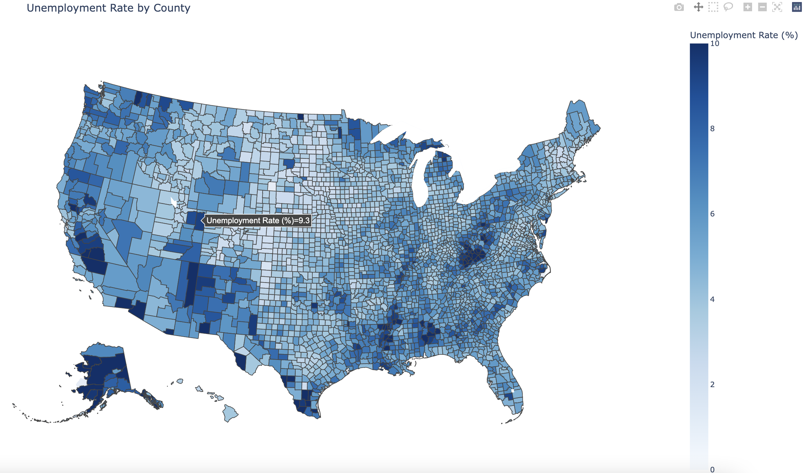
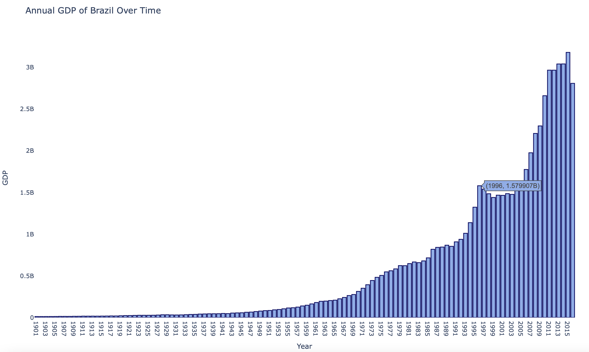
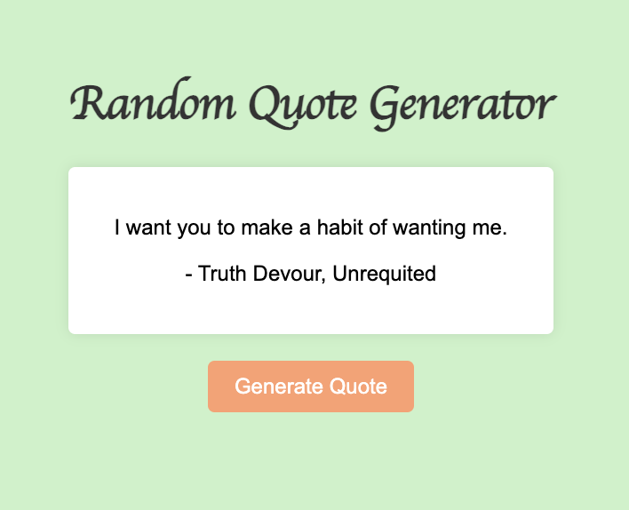

Projects
Choropleth

App utilizes Python with Plotly and GeoJSON data to generate interactive choropleth map visualizing county unemployment rates.
- Plotly
- JSON
- Python
Bar Chart

This Python script visualizes historical JSON population data for Brazil using Plotly, showcasing data visualization and Python programming skills.
- Plotly
- JSON
- Python
Random Quote

Generates random quotes from an API, showcasing skills in HTML, CSS, JavaScript, and API integration.
- SASS
- API
- JavaScript